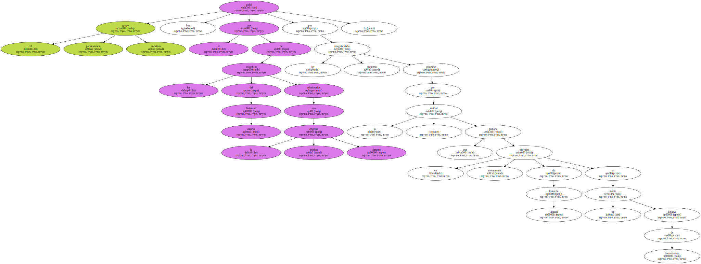
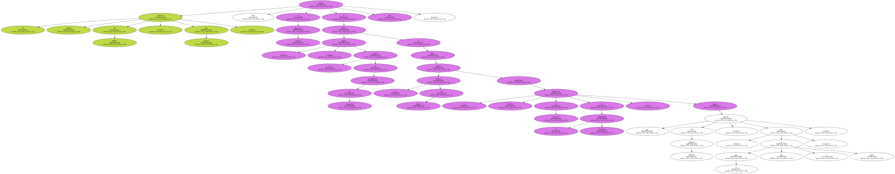
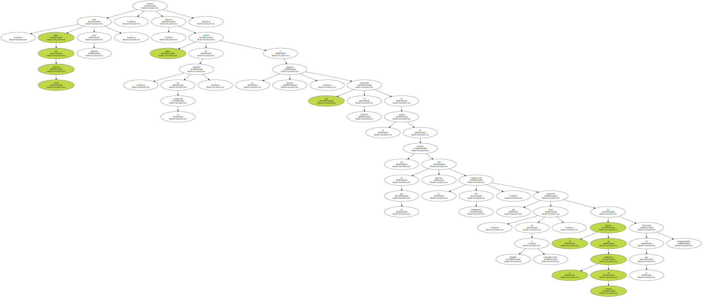
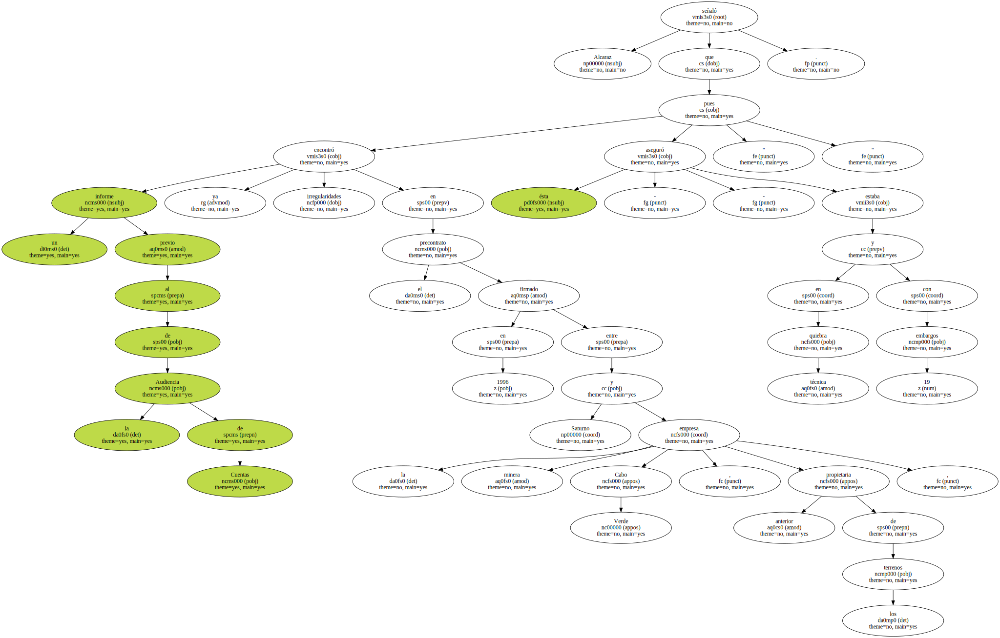
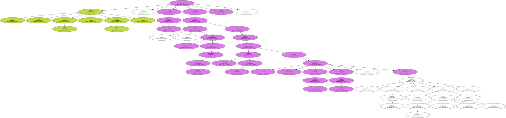
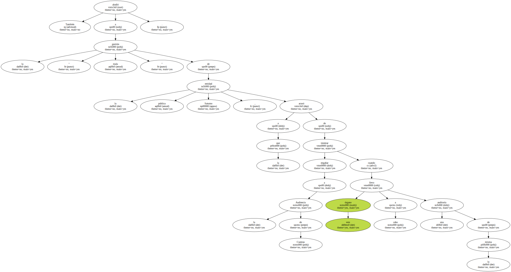
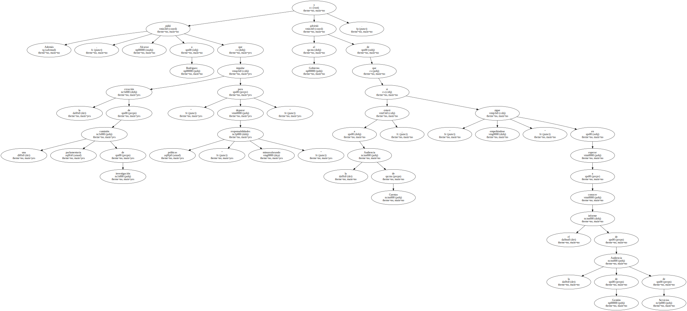
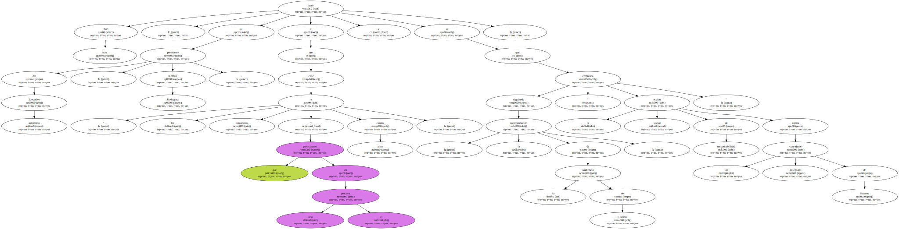

El grupo parlamentario socialista pidió hoy el cese de los miembros del Gobierno canario relacionados con la empresa pública Saturno por las presuntas irregularidades cometidas por la entidad , que gestiona un proyecto monumental de Eduardo Chillida en el monte Tindaya de Fuerteventura.
El portavoz adjunto del PSOE , José Alcaraz , acusó hoy al Ejecutivo canario de intentar " dilatar " el proceso de investigación del expediente al haber pedido un informe del mismo a la Inspección General de Servicios de la Comunidad Autónoma , órgano que depende del Gobierno regional , " por lo que es juez y parte " , dijo.
" Parte del actual Gobierno está bajo sospecha " , aseveró Alcaraz , quien calificó de " tapadera de la corrupción " a la empresa Saturno , que representó al Gabinete en la compra de los terrenos en los que está prevista la construcción del monumento , una operación " llena de absurdos y contradicciones " en la que un informe de la Audiencia de Cuentas ha detectado irregularidades.
Alcaraz señaló que un informe previo al de la Audiencia de Cuentas ya encontró irregularidades en el precontrato firmado en 1996 entre Saturno y la empresa minera Cabo Verde , anterior propietaria de los terrenos , pues ésta - aseguró - " estaba en quiebra técnica y con 19 embargos ".
El diputado socialista recordó la existencia de una cláusula por la cual , si el proyecto no está ejecutado el próximo 14 de marzo , el Gobierno de Canarias deberá indemnizar con 500 millones de pesetas a la empresa minera Cabo Verde , por lo que consideró que " se ha actuado a favor de intereses privados de forma pública y escandalosa ".
También aludió a la " mala gestión " de la entidad pública Saturno , a la que acusó de intentar engañar a la Audiencia de Cuentas cuando este órgano llevo a cabo una auditoría de la misma.
Por ello , instó al presidente del Ejecutivo autónomo , Román Rodríguez , a que cese " a los consejeros y altos cargos que participaron en todo el proceso " y a que - siguiendo la recomendación de la Audiencia de Cuentas - " emprenda la acción social de responsabilidad contra los consejeros delegados de Saturno ".

Además , Alcaraz pidió a Rodríguez que impulse la creación de una comisión parlamentaria de investigación " para depurar responsabilidades políticas " y advirtió al Gobierno de que estará " minusvalorando " a la Audiencia de Cuentas , si " sigue empeñándose " en esperar a conocer el informe de la Audiencia de Gestión de Servicios.
Descartó que la reciente retirada de la política activa del ex consejero de Turismo y Transportes y vicepresidente del Gobierno en la pasada legislatura , Lorenzo Olarte , se deba a que pueda ser responsable de irregularidades en el expediente de Tindaya , y achacó su marcha a " la pugna política que hay dentro de Coalición Canaria ".

En cuanto a la opinión del PSOE sobre si el proyecto de Chillida debe seguir adelante , dijo que todavía falta un estudio geotécnico que avale la posibilidad real de ejecutarlo , y añadió que es el propio Gobierno canario " quien parece menos interesado en que se ejecute ".
